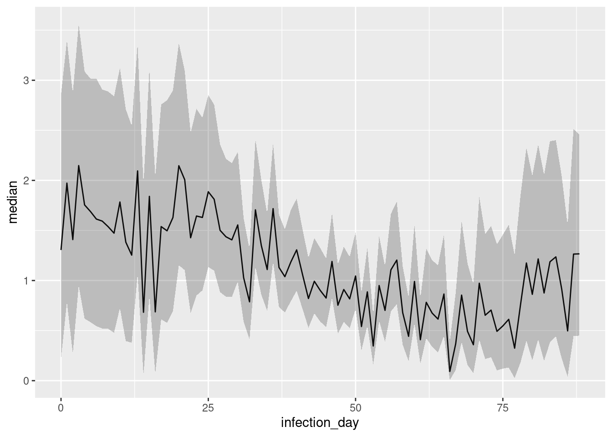
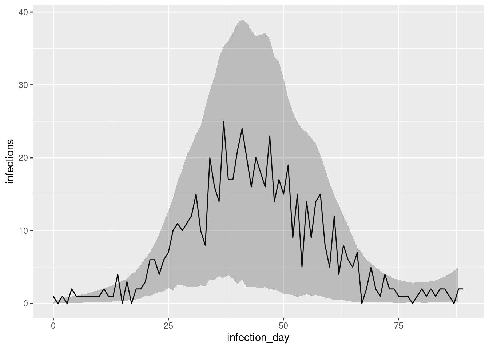
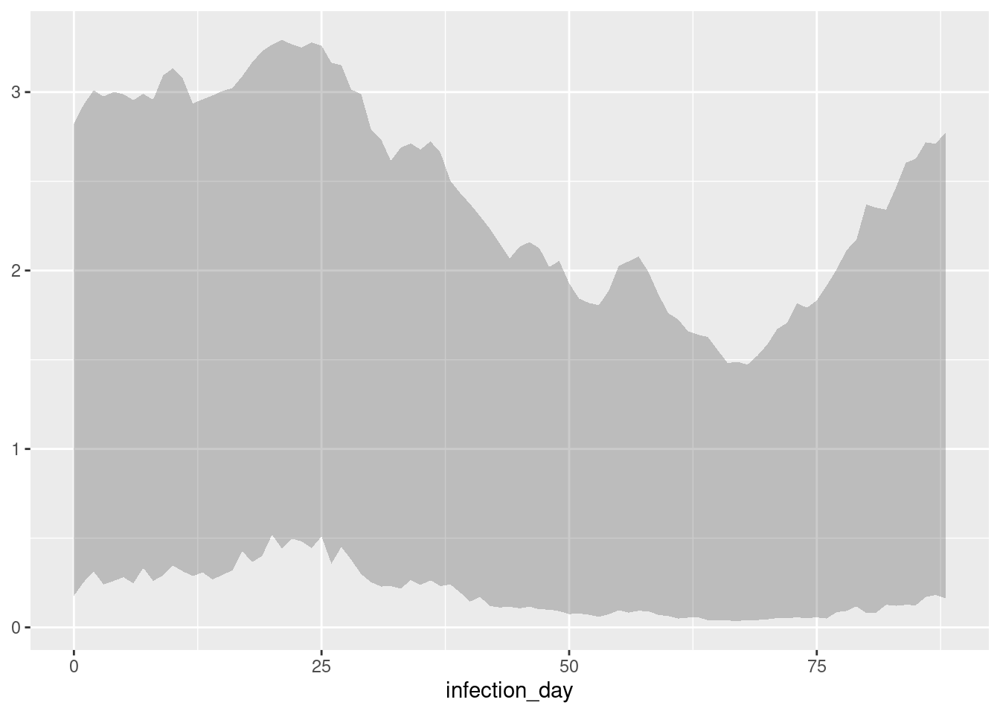
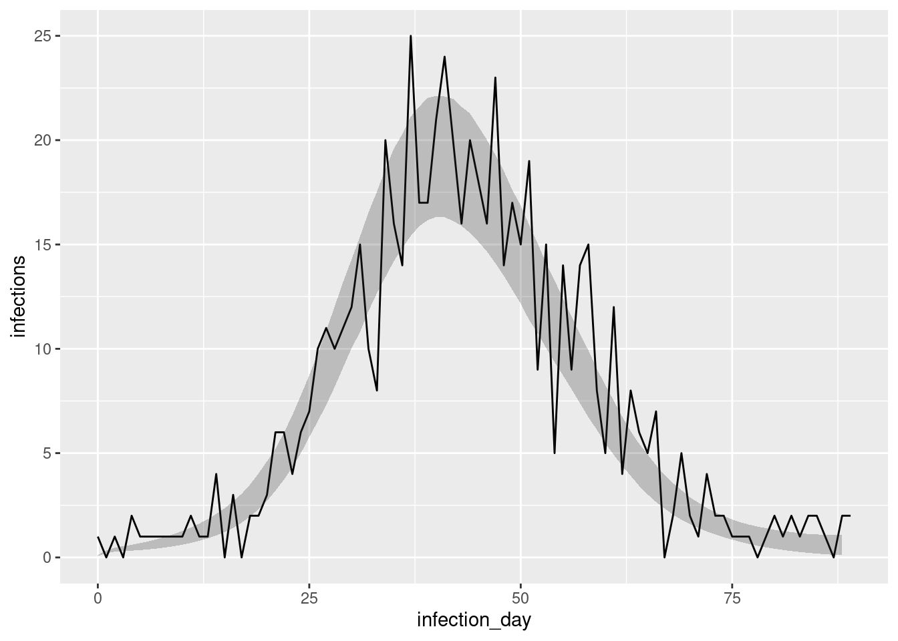
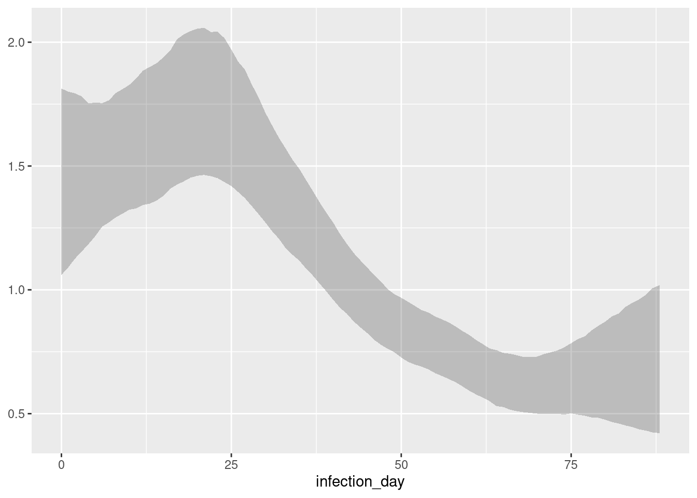
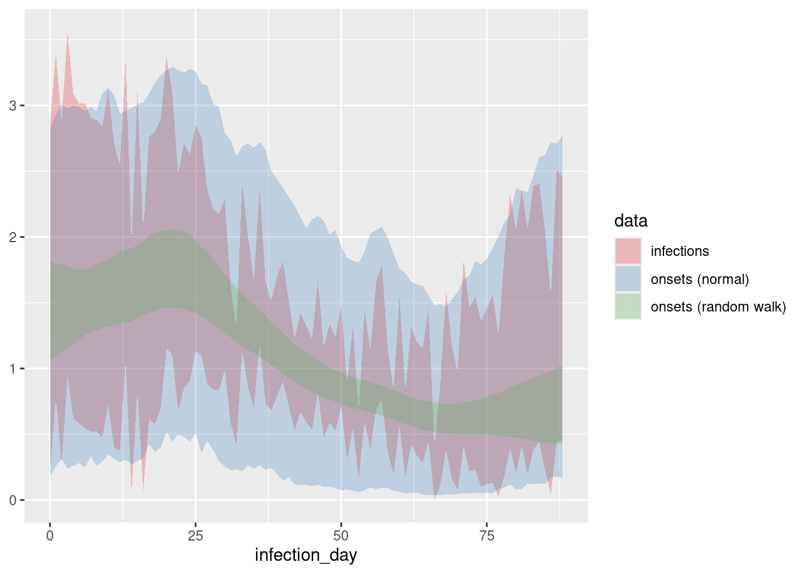

library("nfidd")
library("dplyr")
library("tidyr")
library("ggplot2")
library("here")
library("cmdstanr")
library("tidybayes")R estimation and the renewal equation
Introduction to the reproduction number
Objectives
The aim of this session is to introduce the renewal equation as an infection generating process, and to show how it can be used to estimate a time-varying reproduction number.
Libraries used
In this session we will use the nfidd package to load the data set of infection times, the dplyr and tidyr packages for data wrangling, ggplot2 library for plotting, the here library to find the stan model, and the cmdstanr library for using stan. We will also use the tidybayes package for extracting results of the inference.
Tip
The code in this session can be run as an interactive notebook using RStudio, or copied-and-pasted into an R session. It needs to be run inside the course repository so that the here() commands below find the stan model files.
The renewal equation as a process model for infectious diseases
In this session we introduce modelling the infection process itself, in addition to modelling observation processes.
Recall that in the session on convolutions we tried to estimate the number of infections. In doing so we assumed that infections every day were independently identically distributed and determined only by the number of symptom onsets that they caused. In reality, however, we know that infections are not independent. Because infection is dependent on a pathogen being transmitted from one individual to another, we expect infections on any day to depend on existing infections, that is the number of individuals that became infectious in the recent past. We know express this relationship via the renewal equation, which links these recent infections to the number of new infections expected on any day via the reproduction number \(R\).
Remember that this is a more general concept than the basic reproduction number \(R_0\) which represents the average number of secondary infections caused by a single infectious individual in a completely susceptible population. The reproduction number \(R\) (sometimes called the effective reproduction number) *more generally describes the average number of secondary infections caused by a single infectious individual and can in time and space as a function of differences in population level susceptibility, changes in behaviour, policy, seasonality etc.
In most mechanistic models of infectious diseases (starting with the simplest SIR model), $ arises out of a combination of parameters and variables representing the system state, for example in a simple SIR model it can be calculated as \(R_0 S/N\) where \(S\) is the current number of susceptibles in the population of size \(N\). By fitting such models to data it is then possible to calculate the value of \(R\) at any point in time. The renewal equation represents a more general model which includes the SIR model as a special case. In its basic form it makes no assumption about the specific processes that cause \(R\) to have a certain value and/or change over time, but instead it only relates the number of infected people in the population, the current value of the reproduction number and a delay distribution that represents the timings of when individuals infect others relative to when they themselves became infected, the so-called generation time. Mathematically, it can be written as
\[ I_t = R_t \sum_{i=1}^{g_\mathrm{max}} I_{t-i} g_i \]
Here, \(I_t\) is the number of infected individuals on day \(t\), \(R_t\) is the current value of the reproduction number and \(g_i\) is the probability of a secondary infection occurring \(i\) days after the infector became infected themselves, with a maximum \(g_\mathrm{max}\). Remembering the session on convolutions you will be able to identify that the renewal equation represents a convolution of the infection time series with itself, with the delay distribution given by \(g_i\) and \(R_t\) representing a scaling that is being applied.
Discrete vs. continuous renewal equation
The equation shown above represents the discrete version of the reproduction number. Similar to discussions in the session on convolutions this can be interpreted as a discretised version of a continuous one where the sum is replaced by an integral and the generation time distribution is continuous. Note that in the discrete version we have started the sum at 1 and thus set \(g_0=0\) which will make calculations easier.
Instantaneous vs. case reproduction number
There are different definitions of the reproduction number that can be applied to the situation where it changes in time. As it is defined above it is also called the instantaneous reproduction number because any change affects all currently infectious individual instantaneously. Another example of a definition is the case reproduction number, where changes affect individuals at the time that they are infected but then they have a constant reproduction number throughout their infectious period.
Stochastic vs. deterministic renewal equation
The version of the discrete renewal equation we wrote above is deterministic, i.e. knowing the number of infections up to a certain time point and the reproduction number we can work out exactly how many new infections we will see. Sometimes stochasticity is added where the equation above gives the expectation of \(I_t\) but there exists random variation around it. In this course we will only deal with the deterministic renewal equation.
Simulating an epidemic using the renewal equation
With the theory out of the way we now turn to simulating an epidemic using the renewal equation. We first write a function to simulate the epidemic using the discrete renewal equation.
## function that takes three inputs to simulate using the renewal equation
##
## function arguments:
## I0: the initial number of infections
## R: the reproduction number, given as a vector with one entry per time point
## gen_time: the generation time distribution, given as a vector with one entry
## per day after infection (the first element corresponding to one day after
## infection)
##
## example: renewal(I0 = 5, R = c(rep(3, 4), rep(0.5, 5)), gen_time = c(0.1, 0.2, 0.3, 0.2, 0.1))
renewal <- function(I0, R, gen_time) {
## set the maximum generation time
max_gen_time <- length(gen_time)
## number of time points
times <- length(R)
I <- c(I0, rep(0, times)) ## set up vector holding number of infected
## iterate over time points
for (t in 1:times) {
## calculate convolution
first_index <- max(1, t - max_gen_time + 1)
I_segment <- I[seq(first_index, t)]
## iterate over generation times
## take reverse of pmf and reverse if needed
gen_pmf <- rev(gen_time[seq_len(t - first_index + 1)])
## convolve infections with generation time
I[t + 1] <- sum(I_segment * gen_pmf) * R[t]
}
return(I[-1]) ## remove I0 from time series
}
Take 10 minutes
Try to understand the renewal() function above. Compare it to the convolve_with_delay() function from the session on convolutions. How are they similar? Can you explain the key differences between the two? Try calling the function with a few different probability distributions and parameters. What kind of behaviours do you see depending on the values you put in?
Estimating R from a time series of infections
We now return to the time series of infections we used in the session on convolutions.
source(here::here("snippets", "load-ts.r"))We use a renewal equation model in stan to estimate the effective reproduction number throughout the outbreak. We assume that the generation time is gamma-distributed with mean 4 and standard deviation 2, with a maximum of 2 weeks (14 days). From this we can calculate that the parameters of the distribution are shape 4 and rate 1. We can use the censored_delay_pmf() function defined in the session on convolutions to use this continuous distribution with the discrete renewal equation. If you don’t have this available any more, you can load it using
source(here("functions", "censored-delay-pmf.r"))To approximate the generation time PMF using random draws from the underlying continuous distribution use
gen_time_pmf <- censored_delay_pmf(rgamma, max = 14, shape = 4, rate = 1)The discrete renewal equation is only valid for generation times greater than 0 so we remove the first element of the pmf and re-normalise:
gen_time_pmf <- gen_time_pmf[-1] ## remove first element
gen_time_pmf <- gen_time_pmf / sum(gen_time_pmf) ## renormaliseAs always we first load the stan model and spend some time trying to understand it.
mod <- cmdstan_model(here("stan", "estimate-r.stan"))
mod$print(line_numbers = TRUE) 1: functions {
2: #include "functions/renewal.stan"
3: }
4:
5: data {
6: int n; // number of days
7: int I0; // number initially infected
8: array[n] int obs; // observed infections
9: int gen_time_max; // maximum generation time
10: array[gen_time_max] real gen_time_pmf; // pmf of generation time distribution
11: }
12:
13: parameters {
14: array[n] real<lower = 0> R;
15: }
16:
17: transformed parameters {
18: array[n] real infections = renewal(I0, R, gen_time_pmf);
19: }
20:
21: model {
22: // priors
23: R ~ normal(1, 1) T[0, ];
24: obs ~ poisson(infections);
25: }
Take 5 minutes
Familiarise yourself with the model above. Again there is a functions block at the beginning of the model (lines 1-3), where we load a function called renewal() (line 2) from a file of the same name which can be found in the subdirectory functions of the stan directory or viewed on the github repo. The functions correspond exactly to our earlier R function of the same name. Later, this functions is called in the model block, to generate the time series of infections using the discretised renewal model (line 19). Which line defines priors, and which the likelihood?
Solution
Line 24 defines the prior distribution of R at each time point, and Line 25 defines the likelihood using Poisson observation uncertainty.
Once again we can generate estimates from this model:
data <- list(
n = nrow(inf_ts) - 1,
obs = inf_ts$infections[-1],
I0 = inf_ts$infections[1],
gen_time_max = length(gen_time_pmf),
gen_time_pmf = gen_time_pmf
)
r_fit <- mod$sample(
data = data, refresh = ifelse(interactive(), 50, 0), show_exceptions = FALSE, show_messages = FALSE
)
r_fit variable mean median sd mad q5 q95 rhat ess_bulk ess_tail
lp__ 894.47 894.93 7.08 7.01 882.40 905.27 1.00 1610 2548
R[1] 1.39 1.30 0.82 0.87 0.22 2.86 1.00 3031 1475
R[2] 2.02 1.97 0.78 0.79 0.79 3.40 1.00 4080 2243
R[3] 1.46 1.41 0.80 0.85 0.27 2.87 1.00 2286 1259
R[4] 2.19 2.15 0.79 0.82 0.95 3.56 1.00 3969 2162
R[5] 1.80 1.76 0.75 0.77 0.62 3.09 1.00 3657 1597
R[6] 1.73 1.69 0.74 0.76 0.58 3.02 1.00 3355 1803
R[7] 1.68 1.61 0.75 0.77 0.55 3.02 1.00 3495 1572
R[8] 1.63 1.59 0.73 0.75 0.52 2.91 1.00 3710 1839
R[9] 1.60 1.54 0.73 0.74 0.52 2.89 1.00 3866 2050
# showing 10 of 179 rows (change via 'max_rows' argument or 'cmdstanr_max_rows' option)Once stan has run its chains, we can visualise the estimates:
# Extract posterior draws
r_posterior <- r_fit |>
gather_draws(R[infection_day]) |>
group_by(infection_day) |>
summarise(
median = median(.value),
lower = quantile(.value, 0.05),
upper = quantile(.value, 0.95),
.groups = "drop"
) |>
mutate(infection_day = infection_day - 1)
ggplot(
data = r_posterior,
aes(x = infection_day, y = median, ymin = lower, ymax = upper)
) +
geom_line() +
geom_ribbon(alpha = 0.25, colour = NA)
Take 10 minutes
Simulate from the renewal equation using the renewal() R function we defined above with a given R trajectory. For example, you could look at R increasing steadily, or suddenly, or having any other trajectory you might imagine. Use the stan model to infer the trajectory of the reproduction number from the resulting time series of infection. Does the model reproduce the simulated R trajectories?
Estimating R from a time series of symptom onsets
Epidemiological data is rarely, perhaps never, available as a time series of infection events. Instead, we usually observe outcomes such as symptom onsets when individuals interact with the health system, e.g. by presenting to a hospital. In the session on convolutions we simulated symptom onsets from a time series of infections by convolving with a delay and then sampling from a Poisson distribution:
source(here::here("functions", "convolve-with-delay.r"))
ip_pmf <- censored_delay_pmf(rgamma, max = 14, shape = 5, rate = 1)
onsets <- convolve_with_delay(inf_ts$infections, ip_pmf)
obs <- rpois(length(onsets), onsets)We now add this to our renewal equation model:
mod <- cmdstan_model(here("stan", "estimate-inf-and-r.stan"))
mod$print(line_numbers = TRUE) 1: functions {
2: #include "functions/convolve_with_delay.stan"
3: #include "functions/renewal.stan"
4: }
5:
6: data {
7: int n; // number of days
8: int I0; // number initially infected
9: array[n] int obs; // observed symptom onsets
10: int gen_time_max; // maximum generation time
11: array[gen_time_max] real gen_time_pmf; // pmf of generation time distribution
12: int<lower = 1> ip_max; // max incubation period
13: array[ip_max + 1] real ip_pmf;
14: }
15:
16: parameters {
17: array[n] real<lower = 0> R;
18: }
19:
20: transformed parameters {
21: array[n] real infections = renewal(I0, R, gen_time_pmf);
22: array[n] real onsets = convolve_with_delay(infections, ip_pmf);
23: }
24:
25: model {
26: // priors
27: R ~ normal(1, 1) T[0, ];
28: obs ~ poisson(onsets);
29: }
Take 5 minutes
Familiarise yourself with the model above. Compare it to the model used earlier in this session, and the one used in the session on convolutions. Does this model have more parameters? How do the assumptions about the infections time series differ between the models?
We then generate estimates from this model:
data <- list(
n = length(onsets) - 1,
obs = onsets[-1],
I0 = inf_ts$infections[1],
gen_time_max = length(gen_time_pmf),
gen_time_pmf = gen_time_pmf,
ip_max = length(ip_pmf) - 1,
ip_pmf = ip_pmf
)
r_inf_fit <- mod$sample(
data = data, refresh = ifelse(interactive(), 50, 0), show_exceptions = FALSE, show_messages = FALSE, parallel_chains = 4
)Warning: A non-integer value was supplied for 'obs'! It will be truncated to an
integer.r_inf_fit variable mean median sd mad q5 q95 rhat ess_bulk ess_tail
lp__ 800.12 800.29 7.65 7.72 787.19 812.07 1.00 1200 1930
R[1] 1.36 1.29 0.82 0.87 0.18 2.82 1.00 2742 1444
R[2] 1.47 1.42 0.82 0.86 0.25 2.93 1.00 2414 1252
R[3] 1.56 1.50 0.81 0.83 0.31 3.01 1.00 2996 1190
R[4] 1.55 1.50 0.83 0.87 0.24 2.97 1.00 2582 1196
R[5] 1.56 1.52 0.84 0.89 0.26 3.00 1.00 2529 1276
R[6] 1.56 1.52 0.82 0.85 0.28 2.99 1.00 2683 1243
R[7] 1.54 1.50 0.81 0.84 0.25 2.96 1.00 1973 875
R[8] 1.58 1.53 0.81 0.83 0.33 2.99 1.00 3145 1421
R[9] 1.54 1.50 0.82 0.87 0.26 2.96 1.00 2250 874
# showing 10 of 268 rows (change via 'max_rows' argument or 'cmdstanr_max_rows' option)We can visualise the posteriors in the same way as earlier here and in the session on convolutions. For example one could do
# To avoid repeating overselves we have put the code to extract the posteriors in a function
source(here::here("functions", "extract-R-posteriors.r"))
posteriors <- r_inf_fit |>
extract_R_posteriors()This time we extracted both the infections and R variables by infection day. We again use this to visualise infections compared to the data used to generate the time series of onsets
inf_posterior <- posteriors |>
filter(.variable == "infections")
ggplot(mapping = aes(x = infection_day)) +
geom_line(data = inf_ts, mapping = aes(y = infections)) +
geom_ribbon(
data = inf_posterior,
mapping = aes(ymin = lower, ymax = upper), alpha = 0.25, colour = NA
)
and reproduction numbers
r_inf_posterior <- posteriors |>
filter(.variable == "R")
ggplot(mapping = aes(x = infection_day)) +
geom_ribbon(
data = r_inf_posterior,
mapping = aes(ymin = lower, ymax = upper), alpha = 0.25, colour = NA
)
Improving the generative model for the reproduction number
In the model so far we have assumed that the reproduction number at any time point is independent of the reproduction number at any other time point. This assumption has resulted in the quite noisy estimates of the reproduction number that we have seen in the plots above.
In reality, we might expect the reproduction number to change more smoothly over time (except in situations of drastic change such as a very effective intervention) and to be more similar at adjacent time points. We can model this by assuming that the reproduction number at time \(t\) is a random draw from a normal distribution with mean equal to the reproduction number at time \(t-1\) and some standard deviation \(\sigma\). This can be described as as a random walk model for the reproduction number. In fact, rather than using this model directly, a better choice might be to use a model where the logarithm of the reproduction number does a random walk, as this will ensure that the reproduction number is always positive and that changes are multiplicative rather than additive (i.e as otherwise the same absolute change in the reproduction number would have a larger effect when the reproduction number is small which likely doesn’t match your intuition for how outbreaks evolve over time). We can write this model as
\[ \sigma \sim HalfNormal(0, 0.05) \\ \] \[ \log(R_0) \sim \mathcal{Lognormal}(-0.1, 0.5) \] \[ \log(R_t) \sim \mathcal{N}(\log(R_{t-1}), \sigma) \]
Here we have placed a prior on the standard deviation of the random walk, which we have assumed to be half-normal (i.e., normal but restricted to being non-negative) with a mean of 0 and a standard deviation of 0.05. This is a so-called weakly informative prior that allows for some variation in the reproduction number over time but not an unrealistic amount. We have also placed a prior on the initial reproduction number, which we have assumed to be log-normally distributed with a mean of -0.1 and a standard deviation of 0.5. This is a weakly informative prior that allows for a wide range of initial reproduction numbers but has a mean of approximately 1.
We can now include this in a stan model,
rw_mod <- cmdstan_model(here("stan", "estimate-inf-and-r-rw.stan"))
rw_mod$print(line_numbers = TRUE) 1: functions {
2: #include "functions/convolve_with_delay.stan"
3: #include "functions/renewal.stan"
4: #include "functions/geometric_random_walk.stan"
5: }
6:
7: data {
8: int n; // number of days
9: int I0; // number initially infected
10: array[n] int obs; // observed symptom onsets
11: int gen_time_max; // maximum generation time
12: array[gen_time_max] real gen_time_pmf; // pmf of generation time distribution
13: int<lower = 1> ip_max; // max incubation period
14: array[ip_max + 1] real ip_pmf;
15: int h; // number of days to forecast
16: }
17:
18: transformed data {
19: int m = n + h;
20: }
21:
22: parameters {
23: real init_R; // initial reproduction number
24: array[m-1] real rw_noise; // random walk noise
25: real<lower = 0> rw_sd; // random walk standard deviation
26: }
27:
28: transformed parameters {
29: array[m] real R = geometric_random_walk(init_R, rw_noise, rw_sd);
30: array[m] real infections = renewal(I0, R, gen_time_pmf);
31: array[m] real onsets = convolve_with_delay(infections, ip_pmf);
32: }
33:
34: model {
35: // priors
36: init_R ~ normal(-.1, 0.5); // Approximately Normal(1, 0.5)
37: rw_noise ~ std_normal();
38: rw_sd ~ normal(0, 0.05) T[0,];
39: obs ~ poisson(onsets[1:n]);
40: }
41:
42: generated quantities {
43: array[h] real forecast;
44: if (h > 0) {
45: for (i in 1:h) {
46: forecast[i] = poisson_rng(onsets[n + i]);
47: }
48: }
49: }Note that the model is very similar to the one we used earlier, but with the addition of the random walk model for the reproduction number. See stan/functions/geometric_random_walk.stan for the geometric random walk function (note that here we use the non-centred parameterisation for efficiency).
We can now generate estimates from this model:
data <- list(
n = length(onsets) - 1,
obs = onsets[-1],
I0 = inf_ts$infections[1],
gen_time_max = length(gen_time_pmf),
gen_time_pmf = gen_time_pmf,
ip_max = length(ip_pmf) - 1,
ip_pmf = ip_pmf,
h = 0 # this is a small easter egg for the attentive reader
)
r_rw_inf_fit <- rw_mod$sample(
data = data, refresh = ifelse(interactive(), 50, 0), show_exceptions = FALSE, show_messages = FALSE,
parallel_chains = 4, max_treedepth = 12
)Warning: A non-integer value was supplied for 'obs'! It will be truncated to an
integer.Warning: 23 of 4000 (1.0%) transitions ended with a divergence.
See https://mc-stan.org/misc/warnings for details.r_rw_inf_fit variable mean median sd mad q5 q95 rhat ess_bulk ess_tail
lp__ 785.26 785.59 7.00 7.07 773.37 796.14 1.00 1599 2204
init_R 0.34 0.35 0.17 0.16 0.06 0.59 1.00 4385 2365
rw_noise[1] 0.16 0.19 0.98 0.99 -1.45 1.74 1.00 6965 3094
rw_noise[2] 0.11 0.10 1.00 1.02 -1.52 1.75 1.00 7237 3045
rw_noise[3] 0.13 0.12 0.98 0.97 -1.47 1.77 1.00 6083 2791
rw_noise[4] 0.12 0.12 0.98 0.99 -1.54 1.73 1.00 6635 2831
rw_noise[5] 0.14 0.14 0.98 0.98 -1.48 1.75 1.00 7474 2962
rw_noise[6] 0.16 0.16 1.00 0.97 -1.49 1.81 1.00 7849 2536
rw_noise[7] 0.16 0.16 1.02 1.00 -1.51 1.84 1.00 6905 2494
rw_noise[8] 0.17 0.17 0.97 0.98 -1.43 1.78 1.00 7967 2728
# showing 10 of 358 rows (change via 'max_rows' argument or 'cmdstanr_max_rows' option)We can again extract and visualise the posteriors in the same way as earlier.
rw_posteriors <- r_rw_inf_fit |>
extract_R_posteriors()rw_inf_posterior <- rw_posteriors |>
filter(.variable == "infections")
ggplot(mapping = aes(x = infection_day)) +
geom_line(data = inf_ts, mapping = aes(y = infections)) +
geom_ribbon(
data = rw_inf_posterior,
mapping = aes(ymin = lower, ymax = upper), alpha = 0.25, colour = NA
)
and reproduction numbers
rw_r_inf_posterior <- rw_posteriors |>
filter(.variable == "R")
ggplot(mapping = aes(x = infection_day)) +
geom_ribbon(
data = rw_r_inf_posterior,
mapping = aes(ymin = lower, ymax = upper), alpha = 0.25, colour = NA
)
Take 10 minutes
Compare the results across the models used in this session, and the one used in the session on convolutions. How do the models vary in the number of parameters that need to be estimated? How do the assumptions about the infections time series differ between the models? What do you notice about the level uncertainty in the estimates of infections and R over the course of the time series? If you have time you could try re-running the experiment with different R trajectories and delay distributions to see whether results change.
Solution
We can see that using the renewal model as generative model we recover the time series of infections more accurately compared to previously when we assumed independent numbers of infections each day and that using a more believable model (i.e the geometric random walk) for the reproduction number improves things even more. Of course, this is helped by the fact that the data was generated by a model similar to the renewal model used for inference.
Comparing the R trajectories
r_inf_posterior <- r_inf_posterior |>
select(-.variable) |>
mutate(data = "onsets (normal)")
rw_r_inf_posterior <- rw_r_inf_posterior |>
select(-.variable) |>
mutate(data = "onsets (random walk)")
## earlier posterior (see previous section)
r_posterior <- r_posterior |>
mutate(data = "infections")
all_posteriors <- rbind(
r_inf_posterior,
rw_r_inf_posterior,
r_posterior
)
ggplot(
all_posteriors,
mapping = aes(
x = infection_day, ymin = lower, ymax = upper, fill = data
)
) +
geom_ribbon(alpha = 0.25, colour = NA) +
scale_fill_brewer(palette = "Set1")
We can see that the estimates are smoother when using the random walk model for the reproduction number, compared to the normal model. The model that fits directly to infections has the lowest uncertainty, which we would expect as it doesn’t have to infer the number of infections from symptom onsets but even here the reproduction number estimates are unrealistically noisy due to the assumption of independence between infections each day.
Going further
- We have used symptom onsets under the assumption that every infected person develops symptoms. Earlier we also created a time series of hospitalisation under the assumption that only a proportion (e.g., 30%) of symptomatic individuals get hospitalised. How would you change the model in this case? What are the implications for inference?